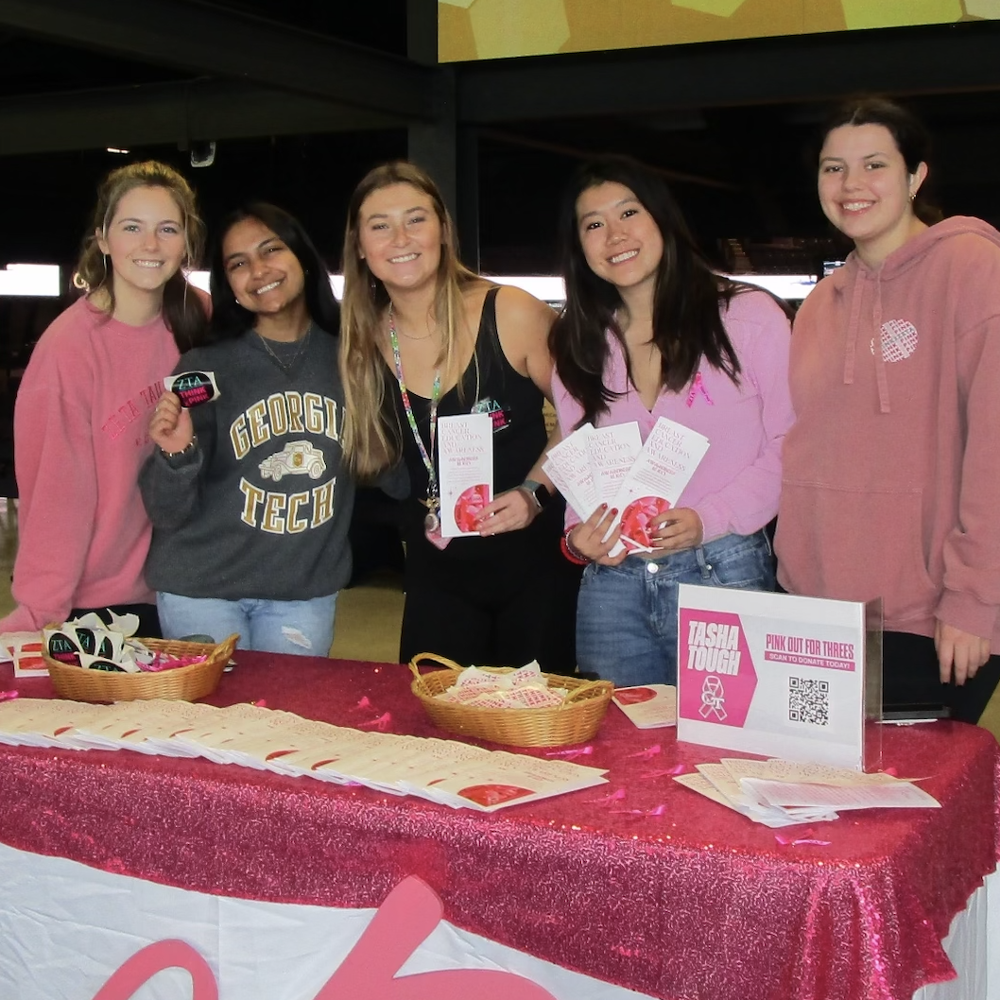

My Service Journey

I'm passionate about finding ways to use my degree for social good. Some of my past experiences involving service good include:
Promoting civic engagement as an intern for Travis County Judge Andy Brown
Spreading cultural awareness and providing medical aid for local schools for 3 years as a volunteer for ACAN, an Austin nonprofit
Developing an assistive technology prototype for patients with ALS with Grand Challenges LLC, a GT program aiming to solve world challenges
Fundraising for breast cancer education and awareness as Service Chairman of my sorority